Research
Publications
All my papers, newest first. Citation counts are from Google Scholar as of 24 October 2026.
2025
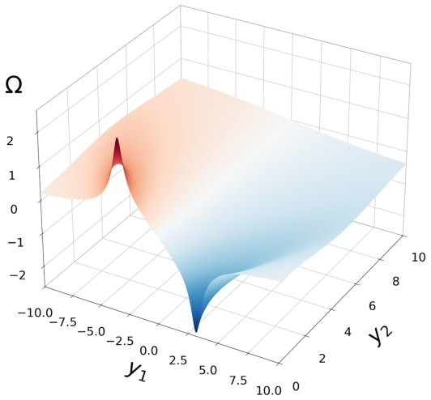
2024
2023
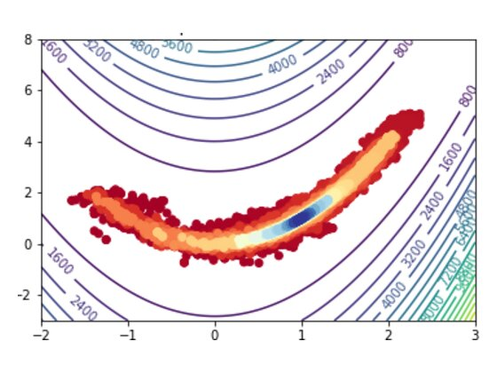
2022
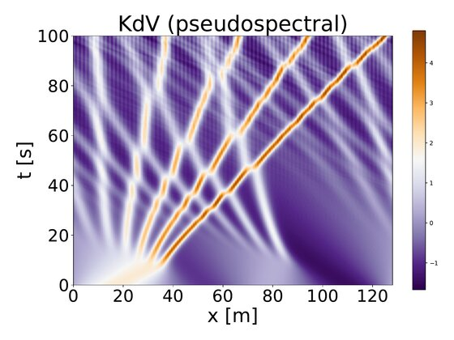
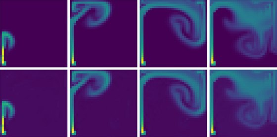
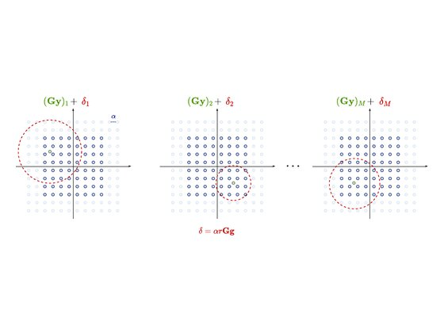
2021
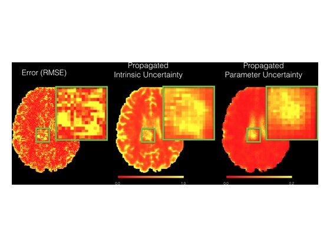
2020
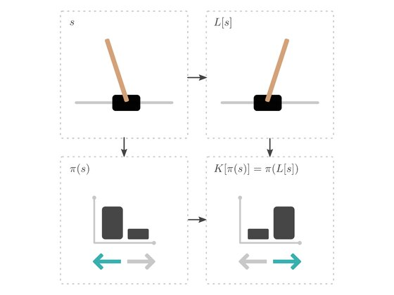
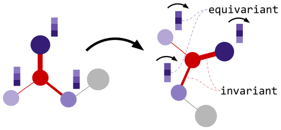
2019
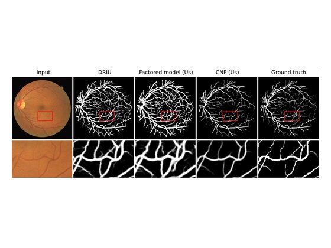
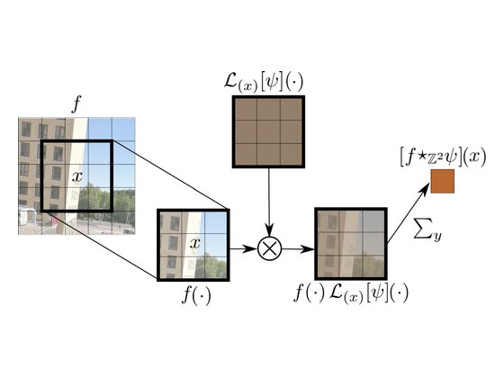
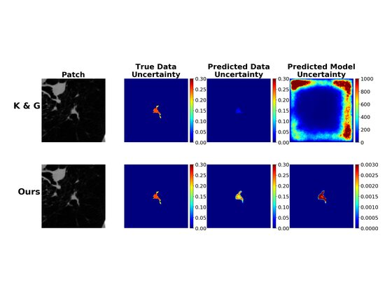
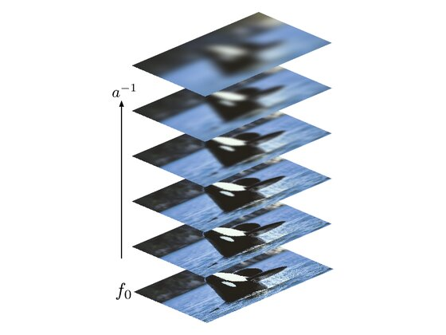
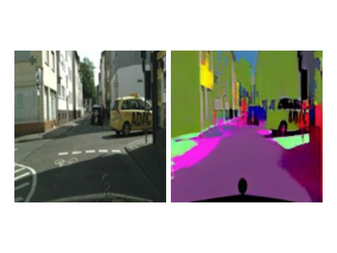
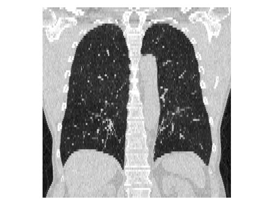
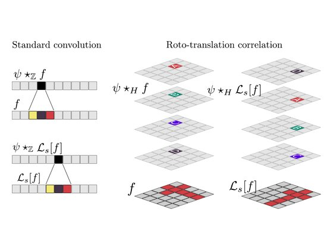
2018
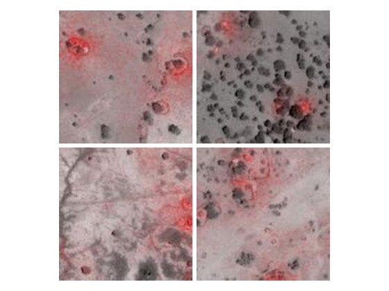
NeurIPS AI for Social Good Workshop 2018
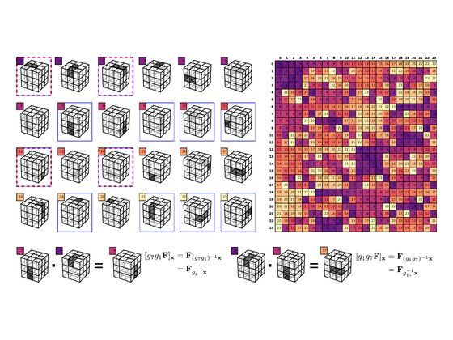
2017
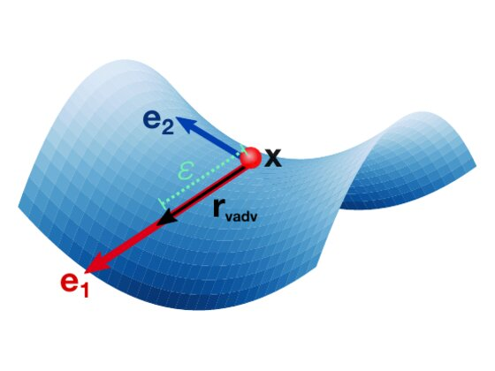
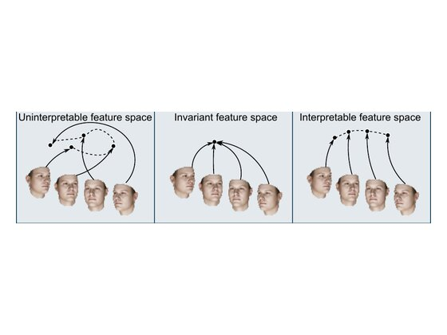
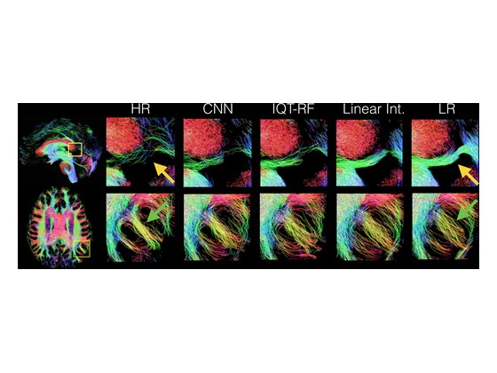
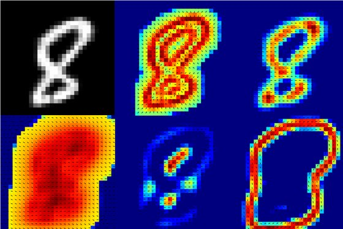
2016
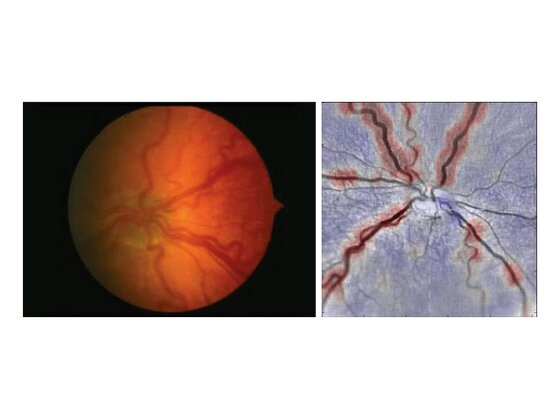
Automated Retinopathy of Prematurity Case Detection with Convolutional Neural Networks
LABELS Workshop, MICCAI 2016
Intellectual Property
Patents
Lattice Reduction-aided Perturbed Additive Demapper for Multiple-input Multiple-output Signal Detection
US Patent 12,199,705